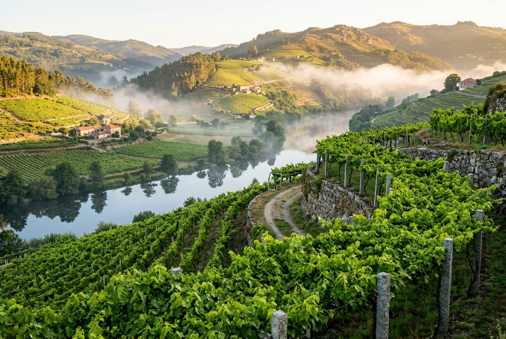

Calamares Vinho Verde DOC Rosé
Alegre, frutado e com borbulhas bem sutis: famoso pela garrafa arredondada e pelo sabor de morango e cereja frescos. Leve (10,5% vol.), meio seco e irresistível bem gelado!
 • Valor único exclusivo R$49,90
• Valor único exclusivo R$49,90
Sem surpresas na hora de escolher: pegue na adega, escaneie e leve em segundos.
Por que você vai gostar deste vinho?
Os Vinhos Verdes portugueses são famosos no mundo todo pela leveza e frescor. Na versão Rosé, o Calamares junta frutas vermelhas gostosas com uma micro-frisância natural deliciosa na língua.
Rosa salmão com toque frisante
Cor rosada clara e brilhante com pequenas borbulhas naturais ao abrir que tornam o gole ainda mais refrescante.
Morango, cereja e groselha
Perfume intenso e alegre de morango fresco, cereja madura e groselha, com delicado toque floral.
Equilíbrio perfeito entre doce e fresco
A acidez vibrante típica do Minho equilibra perfeitamente o toque meio seco — nunca fica enjoativo!
Escolha certa se você ama vinhos bem gelados, fáceis de beber, com leve cócegas de gás natural e um toque frutado meio seco super agradável.
Mapa de Sabor
Guia visual rápido para você acertar na escolha
Combina com o quê?
Como o próprio nome e o polvo no rótulo já sugerem, ele é apaixonado por frutos do mar, comida leve e sobremesas frescas!
Harmonizações Salgadas
-
Frutos do Mar & Petiscos: Anéis de lula, camarão, bolinho de bacalhau e peixes grelhados leves.
-
Culinária Japonesa & Saladas: Sushi, sashimi de salmão, ceviche suave e saladas frescas.
-
Queijos & Tábua Leve: Queijo minas frescal, brie, queijo de cabra e torradinhas com patês leves.
Harmonizações Doces
-
Tortas de Frutas: Torta de morango, cheesecake de frutas vermelhas e torta leve de framboesa.
-
Cremes & Gelatos: Panna cotta com calda de morango ou sorbet de frutas vermelhas.
-
Confeitaria Portuguesa: Doce de ovos suave ou bolo leve de iogurte com frutas.
Fim de semana na varanda, almoço leve ou encontro com amigos.
Amigos, família ou casal em momento descontraído e alegre.
Almoço de sábado/domingo, tarde quente ou aperitivo.
Bem gelado: 6°C a 8°C (~1 hora na geladeira antes de servir).
Um clássico do Minho com garrafa icônica
Produzido pela Enoport Wines (grupo que reúne casas centenárias de Portugal), o Calamares é um dos rótulos portugueses mais queridos do Brasil. Sua garrafa arredondada e o polvo simpático no rótulo celebram a ligação histórica do Minho com a gastronomia do mar.
Na região demarcada dos Vinhos Verdes (DOC), no noroeste português, os solos graníticos e arenosos junto ao clima atlântico garantem frescor natural vibrante — e o nome "Vinho Verde" refere-se justamente à sua juventude, não à cor!
Ficha Rápida do Rótulo
- Uvas Portuguesas:
- Espadeiro, Borraçal e Padeiro
- Denominação / Solo:
- DOC Vinho Verde (Solos Graníticos)
- Produtor:
- Enoport Wines (Portugal)
- Método / Estilo:
- Aço Inox • Meio Seco (Leve Frisante)
- Teor Alcoólico:
- 10,5% vol. • 750ml